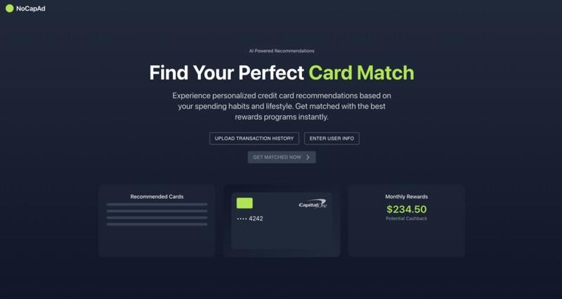
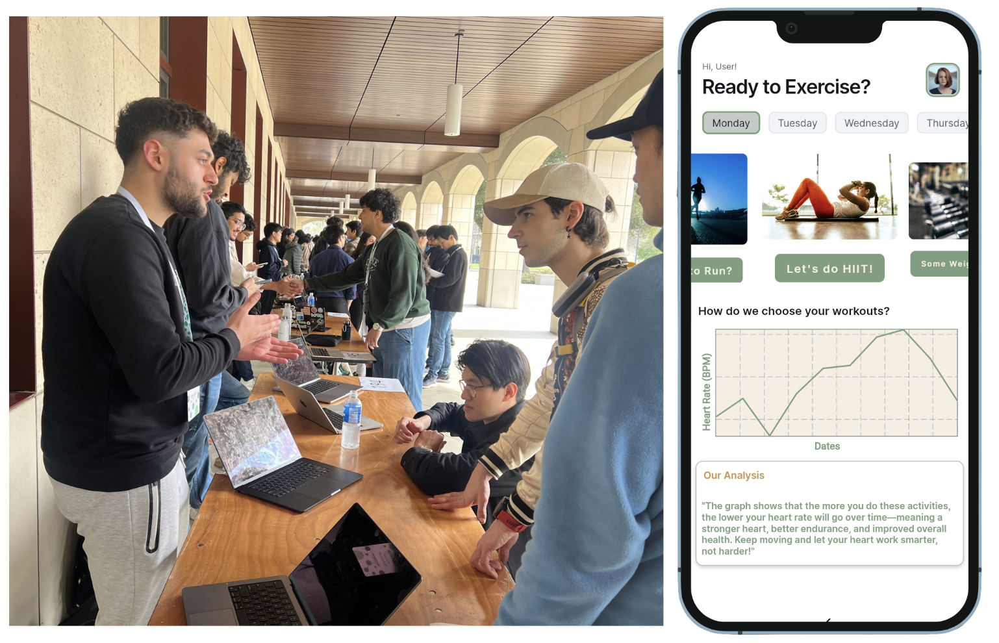
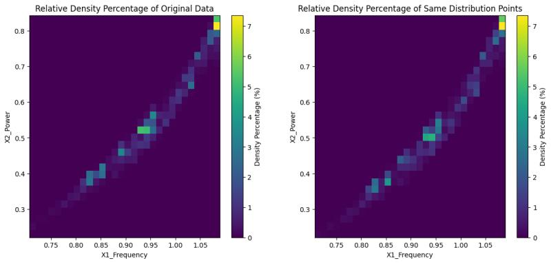

Winner of Capital One Challenge - TAMU Datathon 2024. Web app providing personalized credit card recommendations. It takes the user's profile and previous transaction history in order to save the user the most money. Frontend was built using React + Tailwind CSS. Flask REST API for the backend, and OpenAI's API in order to generate the final recommendation. To build a database of credit cards to be used by ChatGPT, we scraped over 40 of the most popular credit cards at a variety of tiers. To test the recommendations, we ensured that Chain-of-Thought prompt engineering was used on the GenAI so we could qualitatively assess it and to improve its performance.

An AI-driven workout recommendation system built at TreeHacks 2025, Stanford's premier hackathon. Built with reinforcement learning (Stable-Baselines3) and Gymnasium to analyze the user's biometric data from their wearable technologies (FitBit, Apple Watches, Garmin, Whoop). This generated personalized weekly workout routines, significantly improving workout effectiveness and user health. TerraAPI was integrated to get the real-time biometric data and built a backend with Flask that communicated with my frontend on FlutterFlow. Fully functional prototype was built and presented at the event.

Winner of Baker Hughes Challenge - TAMU Datathon 2024. The task for this challenge was to downsample 500,000 electric motor health data points down to 2,500 samples in three different distributions. First, uniform coverage, then density-based emphasis where it should similarily reflect the 500,000 data points distribution. Lastly, developed parameters that allows a user to gradually move in between one distribution to another, which created an intermediate distribution. Our grid-based sampling approach of calculating the density within each grid and adjusting the sampled dataset ended up being the best performing algorithm.
This is the first ever Twitter bot designed to detect manipulated images. Impacted over 170,000 users and was awarded with the "Most Impactful Team" award at the Uber Global Hackathon of 2022 which beat out 1,900 competitors. Built by using the advanced AI model ManTraNet and integrated it into Twitter using Twitter API, Google Cloud Functions, and Tweepy for real-time analysis and response.